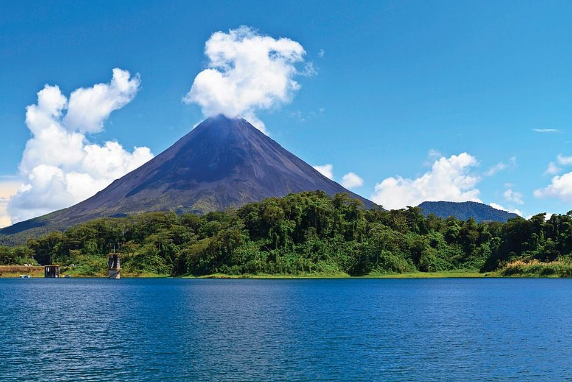

Vivez une expérience unique et découvrez une autre vision du voyage, durable et engagée. Vivez l'aventure au Costa Rica !
Trois lieux à visiter: Le volcan Irazu Gravir un volcan est une expérience qui ne laisse jamais de marbre. La province de Guanacaste En déambulant le long des plages de sable blanc de la côte pacifique, on comprend vite pourquoi Guanacaste est la pépite du tourisme costaricien. Le parc national du Volcan Poas Le Volcan Poas est l’un des plus actifs du Costa Rica. Culminant à plus de 2700 mètres, son cratère principal est particulièrement impressionnant.